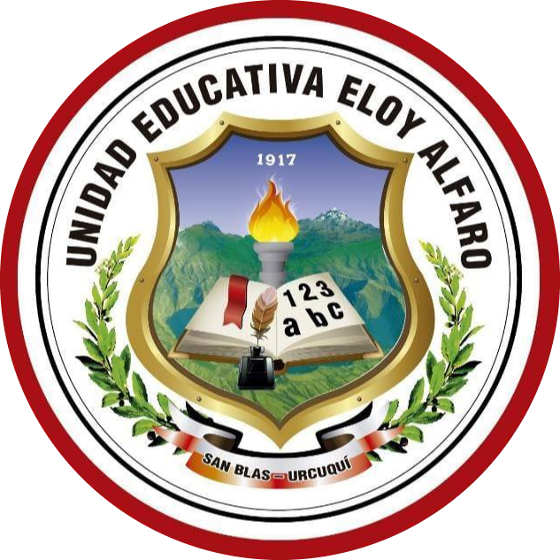

Oportunidad por razones políticas de vivir muchos años fuera del país, el conocimiento de una realidad internacional y las dificultades que tuvo que vivir, ayudaron sin duda en su formación de una sólida personalidad. Eloy Alfaro fue un joven rebelde influenciado por las ideas de la Revolución Francesa : «libertad, igualad y fraternidad» que tuvieron mucha influencia en el siglo XIX , él nació bajo la vigencia de esas ideas, dedicó su vida a luchar contra el abuso, la corrupción, el fanatismo y las injusticias de los gobiernos conservadores que dominaban el Ecuador en aquella época. Ello lo llevó a rebelarse y a emprender una lucha que la comenzó a los 22 años para combatir esta clase de gobiernos que él reprochaba. Su lucha le hizo ganar simpatías sobre todo en los sectores campesinos que lo apoyaban y la justicia de su enfrentamiento contra los gobiernos de turno hizo que a su causa se unieran distintos sectores sociales; por eso lo apoyaron los grandes hacendados, los pequeños y medianos productores y comerciantes, amplios sectores del campo, incluyendo en ese apoyo personas de creencias católicas, es decir fue una lucha convocante de gente honesta sobre todo de la región donde el hizo su base de combate, las provincias de Manabí y Esmeraldas. En 1897 se proclamó el laicismo en la educación, mediante la Ley de Instrucción Pública que puso la enseñanza bajo el control del Estado. Tres años más tarde se creó el Registro Civil y en 1902 se expidió la Ley de Matrimonio Civil, norma que incluyó la legalización de los divorcios. |